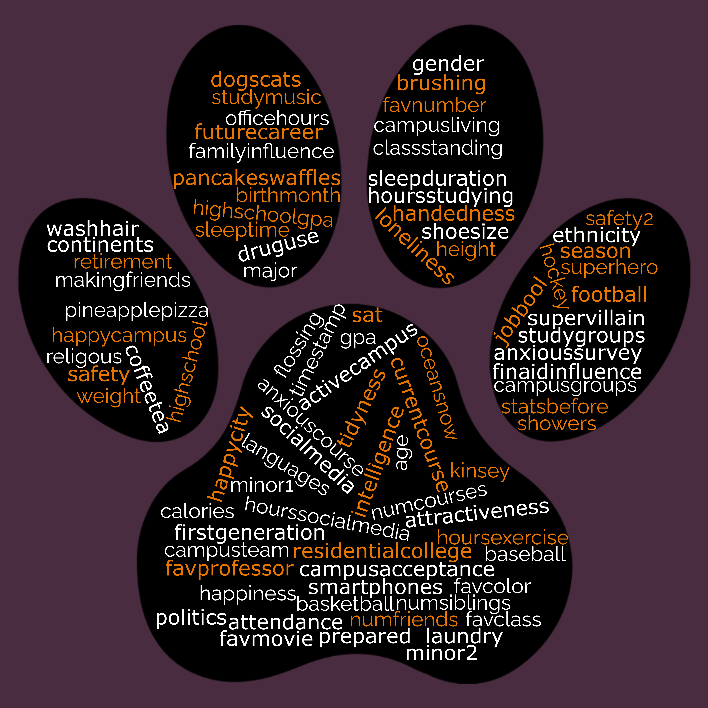

library("tidyverse")
# downloading data directly from Derek's (online) GitHub repository
# demo_df <- readr::read_csv("https://raw.githubusercontent.com/dsollberger/sml201slides/main/data/demographics_data.csv.csv")
# or if you have the file also in your SML 201 folder
demo_df <- readr::read_csv("demographics_data.csv")SML 201
Start
Goal: Explore data wrangling with categorical variables
Objective: Compute counts, make bar graphs, and discuss data

First Glance
Obtaining the Data
Quick Exploration
head(demo_df)# A tibble: 6 × 89
course stats_background class_standing num_courses_past major
<chr> <chr> <chr> <dbl> <chr>
1 SML 201 No Senior 31 Chemistry
2 SML 201 No Sophomore 14 Molecular Biology
3 SML 201 No Sophomore 12 Molecular Biology
4 SML 201 Yes: AP Statistics Sophomore 12 Anthropology
5 SML 201 No Sophomore 14 Neuroscience
6 SML 201 Yes: AP Statistics Sophomore 13 Molecular Biology
# ℹ 84 more variables: residential_college <chr>, dining_hall <chr>,
# GPA_uni <dbl>, gender <chr>, hours_study <dbl>, birth_month <chr>,
# age <dbl>, height <dbl>, shoe_size <dbl>, weight <dbl>, calories <dbl>,
# exercise <dbl>, sleep_start <chr>, sleep_duration <dbl>,
# social_media <chr>, smart_phones <chr>, baseball <chr>, football <chr>,
# basketball <chr>, hockey <chr>, politics <dbl>, religious <dbl>,
# sexuality <chr>, happiness_campus <dbl>, happiness_city <dbl>, …str(demo_df, give.attr = FALSE)spc_tbl_ [161 × 89] (S3: spec_tbl_df/tbl_df/tbl/data.frame)
$ course : chr [1:161] "SML 201" "SML 201" "SML 201" "SML 201" ...
$ stats_background : chr [1:161] "No" "No" "No" "Yes: AP Statistics" ...
$ class_standing : chr [1:161] "Senior" "Sophomore" "Sophomore" "Sophomore" ...
$ num_courses_past : num [1:161] 31 14 12 12 14 13 16 22 NA 21 ...
$ major : chr [1:161] "Chemistry" "Molecular Biology" "Molecular Biology" "Anthropology" ...
$ residential_college : chr [1:161] "Yeh College" "Mathey" "Rockefeller" "Rockefeller" ...
$ dining_hall : chr [1:161] "Yeh" "Yeh" "Yeh" "Whitman" ...
$ GPA_uni : num [1:161] NA NA NA 3.89 3.5 3.35 NA 3.9 4 NA ...
$ gender : chr [1:161] "Male" "Female" "Female" "Male" ...
$ hours_study : num [1:161] 24 NA NA 21 10 15 NA 20 60 NA ...
$ birth_month : chr [1:161] "August" "August" "July" "January" ...
$ age : num [1:161] 21 20 19 19 19 20 19 20 18 20 ...
$ height : num [1:161] 70 67 NA 71 52 61 63 69 64 62 ...
$ shoe_size : num [1:161] 9.5 6.5 5 11 7.5 6 7.5 10.5 7 NA ...
$ weight : num [1:161] 160 115 130 172 128 105 NA 135 120 NA ...
$ calories : num [1:161] 1200 NA 1500 3000 1200 1500 NA 2200 1500 NA ...
$ exercise : num [1:161] 5 8 2 8 2 1 NA 7 2 NA ...
$ sleep_start : chr [1:161] "2 AM" "12 midnight" "1 AM" "12 midnight" ...
$ sleep_duration : num [1:161] 7 7 6 7 5 7 6 8 8 NA ...
$ social_media : chr [1:161] "Instagram" "Instagram" "Instagram" "Instagram" ...
$ smart_phones : chr [1:161] "iPhone" "iPhone" "iPhone" "iPhone" ...
$ baseball : chr [1:161] "Los Angeles Dodgers" "Texas Rangers" NA "Pittsburgh Pirates" ...
$ football : chr [1:161] NA "Dallas Cowboys" NA "Pittsburgh Steelers" ...
$ basketball : chr [1:161] "Los Angeles Lakers" "Dallas Mavericks" NA "Los Angeles Lakers" ...
$ hockey : chr [1:161] NA "Dallas Stars" NA "Pittsburgh Penguins" ...
$ politics : num [1:161] 37 NA 0 10 100 30 NA 50 30 NA ...
$ religious : num [1:161] 20 80 60 30 29 75 NA 90 50 0 ...
$ sexuality : chr [1:161] "0" "0" "0" "5" ...
$ happiness_campus : num [1:161] 90 92 100 90 67 70 NA 90 40 NA ...
$ happiness_city : num [1:161] 90 85 80 60 8 30 NA 90 30 NA ...
$ anxious_201 : num [1:161] 30 35 100 30 78 80 NA 25 80 NA ...
$ high_school_type : chr [1:161] "public school" "private school" "private school" "public school" ...
$ college_transition : num [1:161] 70 NA 50 50 67 80 NA 75 60 NA ...
$ drug_use : chr [1:161] "No" "No" "No" "Yes" ...
$ first_generation : chr [1:161] "No" "No" "Yes" "No" ...
$ languages_spoken : num [1:161] 1.2 1 2 1.5 2.3 3 2 2.5 1.7 NA ...
$ making_friends : num [1:161] 90 90 60 70 59 80 NA 50 20 NA ...
$ campus_sports : chr [1:161] "Yes: intramural team" "Yes: athletic scholarship" "No" "Yes: intramural team" ...
$ office_hours : num [1:161] 90 75 50 100 87 60 NA 90 70 NA ...
$ study_groups : num [1:161] 50 80 80 40 89 60 NA 90 0 NA ...
$ financial_planning : chr [1:161] "Yes" "No" "No" "Yes" ...
$ happiness : num [1:161] 85 90 70 70 78 70 NA 90 50 NA ...
$ intelligence : num [1:161] 70 80 60 90 99 80 NA 80 50 NA ...
$ attractiveness : num [1:161] 45 NA 60 75 100 70 NA 65 30 NA ...
$ favorite_color : chr [1:161] "blue" "Purple" "pink" "green" ...
$ favorite_number : num [1:161] 4 37 11 6 11 10 7 7 27 NA ...
$ showering : num [1:161] 7 9 7 7 7 11 NA 7 7 NA ...
$ brushing_teeth : num [1:161] 13 NA 7 14 14 14 14 14 14 14 ...
$ flossing : num [1:161] 0 NA 2 0 7 7 7 7 14 7 ...
$ hair_washing : num [1:161] 7 3 3 7 1 2 NA 7 1 NA ...
$ water_drinking : num [1:161] 2 NA 3 18 2 2 NA 10 30 NA ...
$ financial_aid : num [1:161] 0 NA 70 100 100 80 100 50 0 NA ...
$ future_career : num [1:161] 70 70 80 80 0 90 NA 90 50 NA ...
$ siblings : num [1:161] 1 2 2 1 4 4 NA 1 3 1 ...
$ favorite_movie : chr [1:161] "Star Wars" NA "Dead Poets Society" "hunger games " ...
$ loneliness : num [1:161] 40 NA 50 20 50 70 NA 30 40 NA ...
$ organized : num [1:161] 75 NA 70 80 38 40 NA 80 50 NA ...
$ GPA_HS : num [1:161] NA NA NA 4 4 3.9 4 4 4 NA ...
$ SAT : num [1:161] NA NA NA 1540 NA 1510 NA 1560 1570 NA ...
$ social_active : num [1:161] 55 NA 70 60 37 60 NA 80 40 NA ...
$ num_friends : num [1:161] 20 NA 15 25 7 5 NA 20 4 NA ...
$ music_studying : chr [1:161] "Yes" "Yes" "Yes" "Yes" ...
$ family_influence : num [1:161] 0 NA NA 30 50 50 NA 50 30 NA ...
$ living_on_campus : chr [1:161] "Yes" "Yes" "Yes" "Yes" ...
$ college_job : chr [1:161] "No" "No" "No" "No" ...
$ campus_groups : chr [1:161] "Yes" "Yes" "Yes" "Yes" ...
$ attendance : num [1:161] 70 98 95 99 98 100 NA 90 100 NA ...
$ pancakes_waffles : chr [1:161] "waffles" "pancakes" "pancakes" "waffles" ...
$ coffee_tea : chr [1:161] "tea" "(neither)" "tea" "coffee" ...
$ dogs_cats : chr [1:161] "cats" "dogs" "dogs" "dogs" ...
$ ocean_snow : chr [1:161] "ocean" "ocean" "ocean" "ocean" ...
$ pineapple_pizza : chr [1:161] "tolerable" NA "No!" "No!" ...
$ spicy_food : num [1:161] 3 NA NA 3 6 4 NA 4 5 NA ...
$ campus_acceptance : num [1:161] 100 90 NA 70 67 70 NA 90 70 NA ...
$ social_media_duration: num [1:161] 7 NA 3 3 7 5 NA 3 0 NA ...
$ continents : num [1:161] 3 2 NA 2 2 1 NA 3 6 2 ...
$ superhero : chr [1:161] "Spider-Man" NA NA "green arrow " ...
$ supervillain : chr [1:161] "Doctor Doom" NA NA "octoman" ...
$ season : chr [1:161] "Spring" "Fall" "Fall" "Summer" ...
$ handedness : chr [1:161] "right-handed" "right-handed" "right-handed" "left-handed" ...
$ musical : chr [1:161] "No" "Yes, casually" "Yes, casually" "No" ...
$ campus_safety : num [1:161] 90 NA 80 100 98 90 NA 95 70 NA ...
$ campus_resources : num [1:161] 70 NA 80 80 89 70 NA 100 60 NA ...
$ laundry : num [1:161] 2 NA 4 5 4 1 NA 4 2 NA ...
$ favorite_class : chr [1:161] "EAS 224" NA NA "FRS 135" ...
$ favorite_teacher : chr [1:161] "Dr. VanderKam" NA NA "Susanna Moore " ...
$ uni_applied : num [1:161] 20 1 21 2 NA 10 10 17 3 19 ...
$ gap_year : chr [1:161] "No" "No" "No" "No" ...
$ survey_comfort : num [1:161] 90 90 60 100 67 40 NA 100 50 NA ...colnames(demo_df) [1] "course" "stats_background" "class_standing"
[4] "num_courses_past" "major" "residential_college"
[7] "dining_hall" "GPA_uni" "gender"
[10] "hours_study" "birth_month" "age"
[13] "height" "shoe_size" "weight"
[16] "calories" "exercise" "sleep_start"
[19] "sleep_duration" "social_media" "smart_phones"
[22] "baseball" "football" "basketball"
[25] "hockey" "politics" "religious"
[28] "sexuality" "happiness_campus" "happiness_city"
[31] "anxious_201" "high_school_type" "college_transition"
[34] "drug_use" "first_generation" "languages_spoken"
[37] "making_friends" "campus_sports" "office_hours"
[40] "study_groups" "financial_planning" "happiness"
[43] "intelligence" "attractiveness" "favorite_color"
[46] "favorite_number" "showering" "brushing_teeth"
[49] "flossing" "hair_washing" "water_drinking"
[52] "financial_aid" "future_career" "siblings"
[55] "favorite_movie" "loneliness" "organized"
[58] "GPA_HS" "SAT" "social_active"
[61] "num_friends" "music_studying" "family_influence"
[64] "living_on_campus" "college_job" "campus_groups"
[67] "attendance" "pancakes_waffles" "coffee_tea"
[70] "dogs_cats" "ocean_snow" "pineapple_pizza"
[73] "spicy_food" "campus_acceptance" "social_media_duration"
[76] "continents" "superhero" "supervillain"
[79] "season" "handedness" "musical"
[82] "campus_safety" "campus_resources" "laundry"
[85] "favorite_class" "favorite_teacher" "uni_applied"
[88] "gap_year" "survey_comfort" Preprocessing
NoteHere is how the data was cleaned
- Advice: you should understand each part of this code by the first exam.
demo_raw <- readr::read_csv("Demographics Survey Survey Student Analysis Report.csv",
col_names = FALSE, skip = 1)
short_names <- c("course", "stats_background", "class_standing",
"num_courses_past", "major", "minor1",
"minor2", "residential_college", "dining_hall",
"GPA_uni", "gender", "ethnicity",
"hours_study", "birth_month", "age",
"height", "shoe_size", "weight",
"calories", "exercise", "sleep_start",
"sleep_duration", "social_media", "smart_phones",
"baseball", "football", "basketball",
"hockey", "politics", "religious",
"sexuality", "happiness_campus", "happiness_city",
"anxious_201", "high_school_type", "college_transition",
"drug_use", "first_generation", "languages_spoken",
"making_friends", "campus_sports", "office_hours",
"study_groups", "financial_planning", "happiness",
"intelligence", "attractiveness", "favorite_color",
"favorite_number", "showering", "brushing_teeth",
"flossing", "hair_washing", "water_drinking",
"financial_aid", "future_career", "siblings",
"favorite_movie", "loneliness", "organized",
"GPA_HS", "SAT", "social_active",
"num_friends", "music_studying", "family_influence",
"living_on_campus", "college_job", "campus_groups",
"attendance", "pancakes_waffles", "coffee_tea",
"dogs_cats", "ocean_snow", "pineapple_pizza",
"spicy_food", "campus_acceptance", "social_media_duration",
"continents", "superhero", "supervillain",
"season", "handedness", "musical",
"campus_safety", "campus_resources", "laundry",
"favorite_class", "favorite_teacher", "uni_applied",
"uni_accepted", "gap_year", "survey_comfort",
"additional_questions"
)
demo_df <- demo_raw |>
# remove student names and Canvas metadeta
select(seq(9, 193, 2)) |>
# apply short column names (i.e. ease programming)
setNames(short_names) |>
# shuffle all rows (i.e. no longer alphabetical by student name)
sample_frac(1.0) |>
# mask majors who are underrepresented
group_by(major) |>
mutate(majorCount = n()) |>
ungroup() |>
mutate(major = ifelse(majorCount >= 3, major, "other")) |>
select(-majorCount) |>
# remove other possible ID factors
select(-c(ethnicity, minor1, minor2, uni_accepted)) |>
mutate(age = ifelse(age < 19 | age > 21, NA, age)) |>
mutate(class_standing = ifelse(class_standing %in% c("Sophomore", "Junior", "Senior"), class_standing, "Senior")) |>
mutate(gender = ifelse(gender %in% c("Female", "Male"), gender, NA)) |>
mutate(num_courses_past = ifelse(num_courses_past < 10, NA, num_courses_past)) |>
# remove outliers
mutate(GPA_uni = ifelse(GPA_uni < 2 | GPA_uni > 4, NA, GPA_uni)) |>
mutate(GPA_HS = ifelse(GPA_HS < 3 | GPA_HS > 4, NA, GPA_HS)) |>
mutate(SAT = ifelse(SAT < 1200 | SAT > 1600, NA, SAT)) |>
mutate(politics = ifelse(politics < 0, 0, politics)) |>
mutate(politics = ifelse(politics > 100, 100, politics)) |>
mutate(siblings = ifelse(siblings > 4, 4, siblings)) |>
mutate(spicy_food = ifelse(spicy_food > 7, 7, spicy_food))
readr::write_csv(demo_df, "demographics_data..csv")
WarningDCP1
Queries
For the Demographics Survey, here are the variable names that represent the responses to the survey questions.
Numerical Summary
“On a scale from 0 to 100—with 0 = very anxious and 100 = comfortable—how comfortable were you taking this survey?”
summary(demo_df$survey_comfort) Min. 1st Qu. Median Mean 3rd Qu. Max. NA's
0.00 71.25 90.00 84.62 100.00 100.00 15 Categorical Summary
“What is your favorite season?”
table(demo_df$season)
Fall Spring Summer Winter
48 43 59 6 Cross-Tabulation
table(demo_df$season, demo_df$gap_year)
No Yes
Fall 43 4
Spring 38 3
Summer 51 6
Winter 6 0
WarningDCP2
Numerical Across a Category
demo_df |>
group_by(gap_year) |>
summarize(avg_age = mean(age, na.rm = TRUE))# A tibble: 3 × 2
gap_year avg_age
<chr> <dbl>
1 No 19.5
2 Yes 20.8
3 <NA> 19.8Seeking Proportions
“Did you take a gap year?”
# carefully defining denominator without missing values
n <- sum(!is.na(demo_df$gap_year))
table(demo_df$gap_year) / n
No Yes
0.90967742 0.09032258 mean(demo_df$gap_year == "Yes", na.rm = TRUE)[1] 0.09032258Bar Chart — Count
“Do you play a musical instrument(s)?”
- Later: discern difference between
stat = "count"andstat = "identity"
demo_df |>
# filter(!is.na(musical)) |>
ggplot(aes(x = musical)) +
geom_bar(color = "black", fill = "green", stat = "count") +
labs(title = "Do you play a musical instrument(s)?",
subtitle = "SML 201, Spring 2026",
x = "",
y = "count") +
theme_minimal()
Most Represented Major by Residential College
demo_df |>
group_by(residential_college, major) |>
mutate(major_count = n()) |>
ungroup() |>
group_by(residential_college) |>
filter(major_count == max(major_count)) |>
ungroup() |>
select(residential_college, major) |>
distinct() |>
arrange(residential_college)# A tibble: 10 × 2
residential_college major
<chr> <chr>
1 Butler Neuroscience
2 Butler Molecular Biology
3 Forbes Princeton School of Public and International Affairs
4 Forbes Molecular Biology
5 Forbes Neuroscience
6 Mathey Molecular Biology
7 New College West Neuroscience
8 Rockefeller Molecular Biology
9 Whitman Molecular Biology
10 Yeh College Molecular Biology
WarningDCP3
Case Study: AI Detection
Suppose that we had a controlled experiment where we
asked students to write an essay
- without extra assistance (“not cheat”)
- with chatbot assistance (“cheat”)
then asked an AI detection bot to try to detect each essay as AI assisted or not.
NoteCreating Synthetic Data
- Advice: you should understand each part of this code by the second exam
set.seed(201) #supress randomization
essay_cheat <- sample(c(TRUE, FALSE),
size = 201,
prob = c(0.45, 0.55),
replace = TRUE)
detect_cheat <- sample(c(TRUE, FALSE),
size = 201,
prob = c(0.75, 0.25),
replace = TRUE)
# make data frame
bot_df <- data.frame(student_id = 1:201,
essay_cheat,
detect_cheat)head(bot_df) student_id essay_cheat detect_cheat
1 1 TRUE TRUE
2 2 FALSE TRUE
3 3 FALSE TRUE
4 4 FALSE FALSE
5 5 TRUE FALSE
6 6 FALSE TRUEOutcomes
Logical AND
bot_df <- bot_df |>
mutate(outcome = case_when(
essay_cheat & detect_cheat ~ "true positive",
!essay_cheat & detect_cheat ~ "false positive",
essay_cheat & !detect_cheat ~ "false negative",
!essay_cheat & !detect_cheat ~ "true negative",
TRUE ~ "unknown classification"
))Counts
TP <- sum(bot_df$outcome == "true positive")
TN <- sum(bot_df$outcome == "true negative")
FP <- sum(bot_df$outcome == "false positive")
FN <- sum(bot_df$outcome == "false negative")table(bot_df$essay_cheat, bot_df$detect_cheat)
FALSE TRUE
FALSE 32 87
TRUE 25 57print(paste0("There were ", TP, " true positives"))[1] "There were 57 true positives"print(paste0("There were ", TN, " true negatives"))[1] "There were 32 true negatives"print(paste0("There were ", FP, " false positives"))[1] "There were 87 false positives"print(paste0("There were ", FN, " false negatives"))[1] "There were 25 false negatives"Metrics
Logical OR
NoteAccuracy
Accuracy is the ratio of true positives OR true negatives over all outcomes
\[\text{accuracy} = \frac{TP + TN}{TP + FP + FN + TN}\]
# accuracy = (TP + TN) / (TP + FP + FN + TN)
accuracy <- mean(bot_df$outcome == "true positive" |
bot_df$outcome == "true negative")
print(round(accuracy, 2))[1] 0.44- This AI bot made correct classifications 44 percent of the time.
Precision
\[\text{precision} = \frac{TP}{TP + FP}\]
precision = TP / (TP + FP)
print(round(precision, 2))[1] 0.4- Out of all of the essays were participants intentionally cheated, the bot correctly classified those essays as “AI assisted” 40 percent of the time.
Recall
\[\text{recall} = \frac{TP}{TP + FN}\]
recall = TP / (TP + FN)
print(round(recall, 2))[1] 0.7- Among all of the essays that were marked as “AI assisted”, 70 percent of those were created by cheating.
NoteSensitivity and specificity
All of these contingency table formulas are collected nicely on the Wikipedia page for sensitivity and specificity.
Quo Vadimus?
Assignments (due Friday):
- Precept 2
- Pick Group Partners
- Coloring Assignment 1
Project 1:
- assigned: Feb 9
- due: Feb 24
Exam 1: Mar 5
“The first [lesson] was always to make the choice to learn. That meant embracing change and mustering the courage to fail; success and failure are two sides of the same coin. You cannot succeed if at some point you haven’t failed” — Maria Ressa
Footnotes
Note(optional) Additional Resources
- Colors: useful glossary by Dr Ying Wei
- a great blog post about the
forcatspackage by Albert Kuo
NoteSession Info
sessionInfo()R version 4.5.2 (2025-10-31 ucrt)
Platform: x86_64-w64-mingw32/x64
Running under: Windows 10 x64 (build 19045)
Matrix products: default
LAPACK version 3.12.1
locale:
[1] LC_COLLATE=English_United States.utf8
[2] LC_CTYPE=English_United States.utf8
[3] LC_MONETARY=English_United States.utf8
[4] LC_NUMERIC=C
[5] LC_TIME=English_United States.utf8
time zone: America/New_York
tzcode source: internal
attached base packages:
[1] stats graphics grDevices utils datasets methods base
other attached packages:
[1] lubridate_1.9.4 forcats_1.0.0 stringr_1.5.1 dplyr_1.1.4
[5] purrr_1.1.0 readr_2.1.5 tidyr_1.3.1 tibble_3.3.0
[9] ggplot2_4.0.0 tidyverse_2.0.0
loaded via a namespace (and not attached):
[1] bit_4.6.0 gtable_0.3.6 jsonlite_2.0.0 crayon_1.5.3
[5] compiler_4.5.2 tidyselect_1.2.1 parallel_4.5.2 scales_1.4.0
[9] yaml_2.3.10 fastmap_1.2.0 R6_2.6.1 labeling_0.4.3
[13] generics_0.1.4 knitr_1.50 htmlwidgets_1.6.4 pillar_1.11.0
[17] RColorBrewer_1.1-3 tzdb_0.5.0 rlang_1.1.6 utf8_1.2.6
[21] stringi_1.8.7 xfun_0.52 S7_0.2.0 bit64_4.6.0-1
[25] timechange_0.3.0 cli_3.6.5 withr_3.0.2 magrittr_2.0.3
[29] digest_0.6.37 grid_4.5.2 vroom_1.6.5 rstudioapi_0.17.1
[33] hms_1.1.3 lifecycle_1.0.4 vctrs_0.6.5 evaluate_1.0.4
[37] glue_1.8.0 farver_2.1.2 rmarkdown_2.29 tools_4.5.2
[41] pkgconfig_2.0.3 htmltools_0.5.8.1